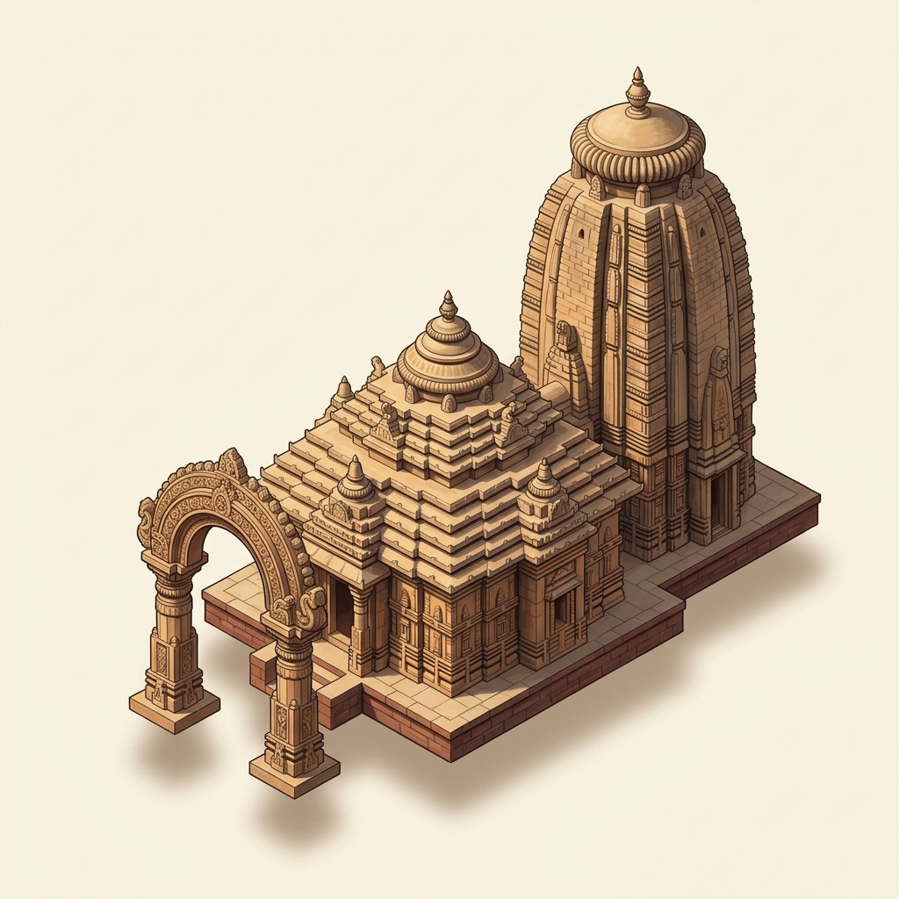

The temple has a tower shrine and a jagamohana (porch hall). A carved arched gateway, the torana, stands in front.

Bhubaneswar
Mukteshvara Temple
A small, richly carved temple in Bhubaneswar, known for the carved arched gateway in front of it.
Start the tour ↓Stop 1 of 4
Meet the temple

- When?
c. 966–975 CE
How do we know?
Scholars date it to the late 10th century CE, but they differ on the exact year.
Percy Brown (1959) judged from details of its style that it was 'probably built about' 975 CE. K.C. Panigrahi (1961) argued for 966 CE. He took that year from a palm-leaf manuscript verse about a Shiva temple, and linked it to this temple through a local tradition that a king called Yayati Kesari built it. Panigrahi also places it between the Sisiresvara (c. 800 CE) and the Brahmesvara (c. 1060 CE). No inscription dates the temple. The research report's 'Brown c. 950' is not supported by Brown's text.
- In whose time?
Somavamshi (Kesari)
How do we know?
Historian K.C. Panigrahi placed it early in the rule of the Somavamshi (Kesari) kings.
This is one scholar's view. Panigrahi bases it on the temple's style and on a local tradition that a king called Yayati Kesari built it, whom he identifies as the Somavamshi ruler Yayati I. Percy Brown (1959) dates the temple but names no dynasty in the passage checked. No inscription links the temple to a dynasty.
- For which god?
- Not yet verified — see our content policy.
- Temple type?
pancharatha shrine with pidha jagamohana
How do we know?
According to K.C. Panigrahi, the main shrine has a pancharatha plan, and its jagamohana (porch hall) is of the pidha type.
Rajendralala Mitra wrote that the temple stands where a mango grove once grew. Hermits had lived there, so it was called Siddharanya, 'the grove of the perfect beings'. It also had natural springs, so many temples were built there.
No known inscription names the builder. According to local tradition, a king called Yayati Kesari built it. Historian K.C. Panigrahi identified him as King Yayati I.
For curious grown-ups
This is one scholar's inference, not proven. Panigrahi (1961) says Yayati I 'most likely' built the temple, in 966 CE, which falls in the reign he gives for Yayati I (c. 950–975 CE). He also notes that inscriptions crediting kings with building temples are absent at Bhubaneswar. Percy Brown (1959) names no builder. Panigrahi credits the Lingaraja temple to Yayati II, not Yayati I.
- Mukteshvara Temple: about 10.5 m (35 ft)
- An adult person: about 1.7 m
- A five-storey building: about 15 m (an assumed height, shown for scale)
About as tall as a five-storey building.
Stop 2 of 4
How it was built
The temple is small. Percy Brown gave it as about 14 m (45 ft) long and about 7.6 m (25 ft) across at its widest point.
A low, eight-sided wall surrounds the temple. K.C. Panigrahi thought it was modelled on the wall of an older temple next door, where the Siddhesvara temple now stands. He found no other eight-sided temple wall in Bhubaneswar.
James Fergusson noted that the porch has no pillars inside. Percy Brown noted that it is one of the few Odisha temples with carvings inside as well as outside.
Stop 3 of 4
The parts
More to spot
In front stands a free-standing gateway called a torana (arched gateway). Two carved pillars hold up a round arch.
Percy Brown called the arch one of the most original ideas in the whole Odisha style. In 1961, K.C. Panigrahi noted that no other surviving temple in Bhubaneswar has such an arch.
Scholars have praised its beauty. Percy Brown called it 'a miniature gem of architecture'. James Fergusson wrote that, in its class, it was 'the gem of Orissan architecture'.
See 3 more
The temple is small, but its parts fit together very well. Rajendralala Mitra wrote that the eye does not notice how small it is. Percy Brown also praised its fine proportions.
Its carvings show many lively scenes. Rajendralala Mitra listed a hermit teaching a pupil, a reader with a palm-leaf book, and a lady holding a pet parrot.
According to local tradition recorded by Rajendralala Mitra in 1880, the arch was not built just for decoration. At the swing festival, a chair was hung from two iron rings on the arch. A festival image of the god was placed in it and swung.
For curious grown-ups
Mitra reports what 'the people say' and does not endorse it. Percy Brown and K.C. Panigrahi describe the torana only as a gateway. Whether the custom continues today was not checked.
Stop 4 of 4
Its family
Percy Brown wrote that it is believed to be the first temple of the 'Middle Period' of Odisha temple building. He dated that period to about 900–1100 CE.
K.C. Panigrahi wrote that its builder brought in a new culture, with new designs, carvings and images of gods. He said this temple divides Bhubaneswar's temples into an early group and a late group.
K.C. Panigrahi wrote that many of its features became the standard for the important temples built after it. Its porch marks the beginning of the pidha type of temple.
Panigrahi saw it as a link between old and new. Its tower shape and plan resemble older temples such as the Sisiresvara. Its porch, rounded edges and some carvings point ahead to the later Brahmesvara temple.
K.C. Panigrahi thought its arch was probably modelled on an older gateway. Parts of that older arch were dug out of a mound called Dola-mandapa, between the old temple town and the Brahmesvara temple. In 1961 they were in the Orissa State Museum.
In 1876, James Fergusson saw two 'sister styles' among Odisha's older temples. He thought about half of them follow the Mukteshvara type.
Sources & evidence
- Established: old records (inscriptions, digs, ASI/UNESCO) say so, and experts agree. Established: old records (inscriptions, digs, ASI/UNESCO) say so, and experts agree.
- Scholarly view: experts' best reading of the clues. Scholarly view: experts' best reading of the clues.
- Debated: sources disagree, or it rests on tradition. Debated: sources disagree, or it rests on tradition.
- Percy Brown. Indian Architecture (Buddhist and Hindu Periods), D.B. Taraporevala Sons & Co., Bombay (1959). https://archive.org/details/dli.csl.8666 (full text, archived copy)
- Krishna Chandra Panigrahi. Archaeological Remains at Bhubaneswar, Orient Longmans, Bombay (1961). https://archive.org/details/in.ernet.dli.2015.111041 (full text, archived copy)
- Rajendralala Mitra. The Antiquities of Orissa, Vol. II, W. Newman & Co., Calcutta (published under orders of the Government of India) (1880). https://archive.org/details/in.ernet.dli.2015.44126 (full text, archived copy)
- James Fergusson. History of Indian and Eastern Architecture, John Murray, London (1876). https://archive.org/details/in.ernet.dli.2015.62030 (full text, archived copy)
Still being checked: which god it is for.